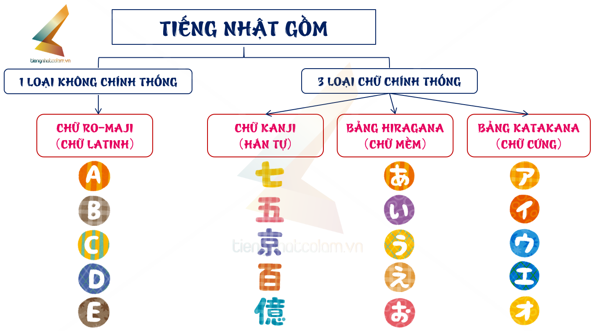
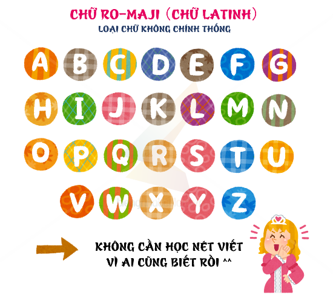
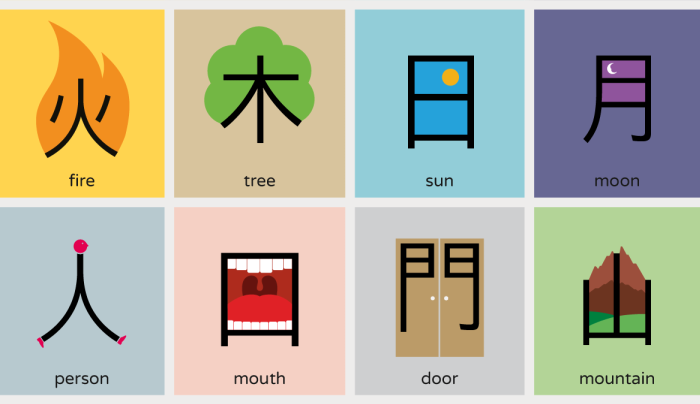
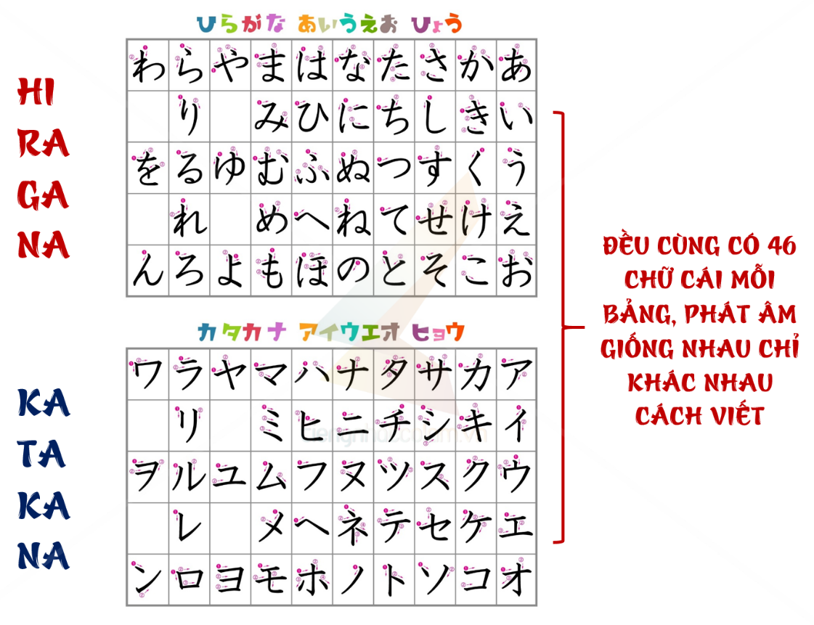
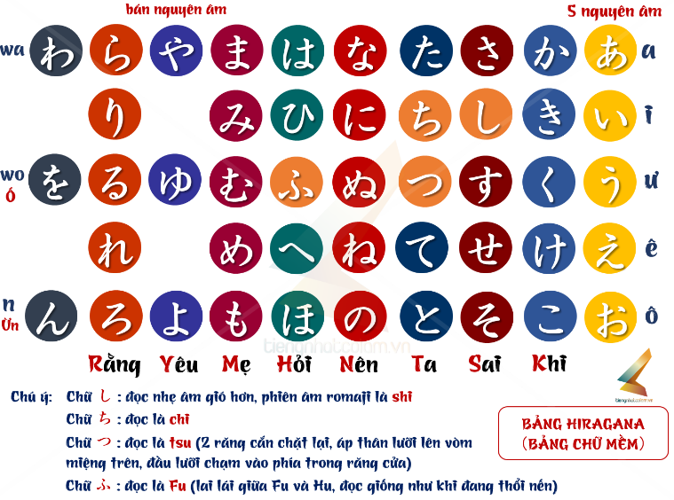
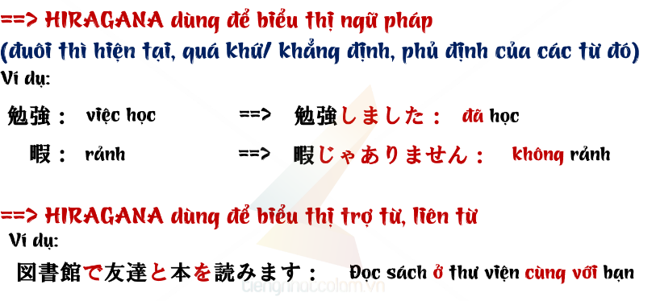
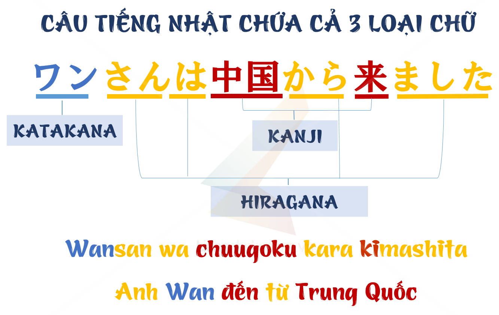

Tiếng Nhật có bao nhiêu loại chữ?
Nhiều người khi mới tìm hiểu về tiếng Nhật thường bị choáng vì thay vì 1 ngôn ngữ có 1 bảng chữ như bảng ABC của tiếng Anh hay bảng chữ Quốc ngữ của Việt Nam thì tiếng Nhật lại có 4 loại chữ tất cả.

Tiếng Nhật gồm 3 loại chữ chính thống và 1 loại không chính thống.
A. Loại không chính thống:
Là bảng chữ Latinh như tiếng Anh hay tiếng Việt không dấu mà chúng ta sử dụng nên không cần học viết loại này mà chỉ cần quan tâm cách đọc kiểu Nhật. Người ta gọi chữ Latinh này là ローマ字 (Ro-maji).

Chữ Ro-maji này dùng để phiên âm các loại chữ chính trong tiếng Nhật như Kanji, Hiragana, Katakana để giúp người nước ngoai thuận lợi hơn khi học tiếng Nhật. Chữ Ro-maji thường được viết trên các bảng biển nơi công cộng để ai không biết tiếng Nhật cũng đọc được thông tin.
Khi các bạn sử dụng bàn phím điện thoại tiếng Nhật cũng nên chọn Japanese- Ro-maji để việc gõ chữ được quen tay giống tiếng Việt hơn.
B. 3 loại chính thống:
Ba loại chính lần lượt là Kanji, Hiragana và Katakana.
Trong 1 câu tiếng Nhật có thể có cả 3 loại chữ xuất hiện.
Rốt cuộc tại sao lại cần nhiều loại chữ như vậy nhỉ. Cùng tìm hiểu chức năng từng loại chữ nha ^^
1. Chữ Kanji (Chữ Hán):

Trong 3 loại chữ thì Hiragana và Katakana có bảng chữ riêng để học thuộc, mỗi bảng chữ gồm 46 chữ cái. Kanji thì không đơn giản như vậy vì trên thực tế là không hề có bảng chữ Kanji. Chính người Nhật cũng phải học Kanji từ tiểu học lên đến đại học. Nếu không biết Kanji người Nhật cũng chẳng thể đọc nổi báo Nhật. Chữ Kanji được du nhập từ Hán tự Trung Quốc bởi các nhà sư. Hiện nay vẫn được duy trì khoảng 1945 Hán tự trong tiếng Nhật (Chữ Kanji là kiểu chữ Phổn thể- mẫu chữ cũ của Trung Quốc)
Người Việt xưa cũng dùng Hán Nôm nhưng nay đã loại bỏ gần như hoàn toàn (chỉ còn thấy trong các câu đối, lễ bái..) và chỉ dùng chữ Quốc ngữ hiện tại. Vậy tại sao Nhật không bỏ chữ Hán đi mà vẫn duy trì nhỉ, cùng xem ví dụ sau nhé:
にわにはにわにわとりがいます。(Viết bằng Hiragana)
Niwanihaniwaniwatorigaimasu. (Phiên âm sang Ro-maji)
Các bạn thử đọc câu trên xem ạ :p Các bạn đã bị méo mồm khi đọc chưa ^^. Lại còn không hiểu như này thì từ chữ cái nào đến chữ cái nào là một từ nữa @@ Nếu có Kanji và nếu bạn học Kanji thì lại rất đơn giản như sau:
庭には二羽 鶏がいます。
Nếu bạn là người biết tiếng Nhật, đọc được Kanji thì câu trên nhìn rất nhanh ra phần nghĩa của các chữ Hán, rất dễ để cắt được từ đâu đến đâu là một từ vựng hay đâu là trợ từ trong công thức.
Chữ 庭 (にわ) đầu tiên có nghĩa là vườn, đọc là niwa.
2 chữ tiếp theo viết là niha には nhưng lại đọc là niwa vì khi đó は đóng vai trò là trợ từ trong câu, dịch cụm庭にはđó là ở trong vườn
2 chữ Hán sau đó二羽(đọc là にわ-niwa) thì có nghĩa là 2 con (cách đếm gà vịt)
Còn 1 cặp にわ (niwa) cuối cùng là にわ trong 鶏（にわとり-niwatori）có nghĩa là con gà
Vậy khi đó – khi đã học Kanji rồi thì việc đọc cũng dễ dàng để cắt chữ mà về phần nghĩa của câu cũng dịch nhanh được thành “Ở trong vườn có 2 con gà”.
è Vậy vai trò đầu tiên của chữ Hán chính là để dễ dàng đọc, hiểu câu nhanh hơn. Nhìn thoát ý nhanh hơn.
Không chỉ vậy, trong tiếng Nhật còn có rất nhiều từ đồng âm khác nghĩa:
Ví dụ như cùng phát âm là “Kaeru” nhưng tùy theo chữ Hán khác lại có nghĩa khác nhau:
· 帰る：trở về
· 変える：thay đổi
· 買える：có thể mua
· 蛙：con ếch
Hay như cùng phát âm là “Jishin” nhưng lại có tận 6 nghĩa khác nhau:
· 自身：bản thân
· 地震：động đất
· 自信：tự tin
· 磁針：kim nam châm (la bàn)
· 時針：kim giờ
· 磁心：từ tính (nam châm)
Cùng 1 phát âm nhưng có thể nhận diện nghĩa nhanh chóng qua chữ Hán
è Vậy vai trò thứ 2 của chữ Hán chính là giúp phân biệt rõ các từ đồng âm để tránh nhầm nghĩa của câu.
Chữ Hán xuất hiện ở mọi nơi, nếu không học chữ Hán sẽ không thể thuận lợi hay dễ dàng tồn tại được ở Nhật đâu các bạn nhé. Điều quan trọng nữa là trong tất cả các bài thi năng lực tiếng Nhật thì đều có chữ Hán cả, bạn không học chữ Hán thì sẽ ra sao chắc các bạn tự biết rồi nhé ^^
Giờ cùng tìm hiểu 2 bảng chữ chuẩn chữ do người Nhật tạo ra nào ^^ Gọi là 2 bảng nhưng thực ra chỉ là học 2 cách viết chữ thôi, còn cách đọc, cách ghép chữ thì tương tự nhau các bạn ạ. Chữ Hiragana có nét viết mềm mại nên còn được gọi là “chữ Mềm”, còn chữ Katakana nét viết cứng hơn nên còn được gọi là “chữ Cứng”

Vậy quy trình học là chúng ta sẽ học cách viết, cách đọc, cách ghép chữ của bảng Hiragana trước rồi mới được học bảng Katakana. Tức sau khi chúng ta có thể đọc được tất cả các từ vựng viết bằng Hiragana thì mới chuyển qua học nốt bảng Katakana tương tự nha ;)
Giờ tìm hiểu vai trò của 2 loại xem tại sao lại có tận 2 bảng chữ cùng cách đọc khác cách viết như vậy nhé.
2. Chữ Hiragana (Chữ mềm):

· Bảng chữ Hiragana hay còn gọi là bảng chữ mềm trước là 50 chữ nay lược còn tổng 46 chữ. Đây là bảng chữ chính nhất trong tiếng Nhật.
· Kanji dùng để viết 1 vài danh từ, động từ, tính từ có thể viết bằng chữ Hán nhưng không thể hiện được thì/ thể của các từ đó. Do đó, Hiragana ra đời để viết các từ gốc Nhật, biểu thị ngữ pháp như thể hiện thì, thể của từ, viết liên từ, phó từ, trợ từ ..v..v

· Hiragana còn được viết trên chữ Hán cho dễ đọc (Gọi là Furigana)
Link video học bảng chữ Hiragana: https://www.youtube.com/watch?v=EXLl5OvD_e8&t
Link video học âm đục, âm ghép chữ Hiragana: https://www.youtube.com/watch?v=8Eh5jSZom5Y
Link video học ghép chữ Hiragana: https://www.youtube.com/watch?v=-GK894eYLNY&t
3. Chữ Katakana (Chữ cứng):

· Bảng Katakana cũng bao gồm 46 chữ cái, phát âm tương tự Bảng Hiragana nhưng chỉ khác cách viết, đường nét cứng cáp hơn nên được gọi là bảng chữ cứng.
· Bảng chữ Katakana phát sinh để phiên âm các từ ngoại lai (những tên nước, địa danh, tên người ngoại quốc và những từ mượn từ nước ngoài)
Ví dụ:
フランス：Nước pháp
ハノイ ：Hà Nội
ホア ：Hòa
カメラ ：Máy ảnh
パンダ ：Gấu trúc (Tên động vật thường được viết bằng Katakana)
レモン ：Quả chanh (Tên rau quả cũng thường được viết bằng Katakana)
Chú ý vì nhiều bạn hay nhầm: Tên người Nhật viết bằng Kanji/ Hiragana nhưng tên người nước ngoài phải viết bằng Katakana tức tên người Việt mình cũng phải viết bằng Katakana nhé ^^. Xem thêm bài Cách chuyển tên sang tiếng Nhật để biết chuyển tên bạn sang tiếng Nhật nha ;)
· Ngoài ra 1 chức năng khác nhiều người không biết đó là Katakana còn dùng để nhấn mạnh. Tức khi muốn nhấn mạnh điều gì đó thì chuyển Hiragana hay Kanji sang Katakana là được
Ví dụ:
一番大切なのは家族です Điều quan trọng nhất đối với tôi là GIA ĐÌNH
Thông thường, chữ Gia đình được viết bằng chữ Kanji 家族 hoặc viết bằng Hiragana かぞくNhưng trường hợp bạn muốn nhấn mạnh chữ Gia đình này thì bạn sẽ không viết bằng Kanji hay Hiragana nữa mà sẽ chuyển thành chữ Katanaka カゾク
è一番大切なのはカゾクです。
Cách đơn giản để biến 1 chữ Hiragana sang Katanaka là bạn ấn gõ chữ Hiragana rồi ấn F7 nhé ^^
Link video học bảng chữ Katakana: https://www.youtube.com/watch?v=2rW5ySatLRk
Link video học ghép chữ Katakana: https://www.youtube.com/watch?v=XbBkgb5mZ_0
Hiểu về các loại chữ trong tiếng Nhật rồi thì cùng bắt tay vào học nào ^^ Nếu bạn nỗ lực, chăm chỉ thời gian đầu khi học tiếng Nhật thì sau này tiếng Nhật sẽ rất đơn giản. Và ngược lại, nếu ban đầu bạn học 1 cách uể oải, không kiên trì thì, cảm thấy khó nuốt trôi bảng chữ tiếng Nhật thì bạn sẽ luôn cảm thấy tiếng Nhật khó mà thôi.
Nhắc lại trình tự học: Học xong cách viết, cách đọc, cách ghép chữ của bảng Hiragana trước rồi mới được học bảng Katakana. Tức sau khi chúng ta có thể đọc được tất cả các từ vựng viết bằng Hiragana thì mới chuyển qua học nốt bảng Katakana tương tự nha ;)
Còn chữ Kanji thì bạn nên học sau khi học xong ngữ pháp Bài 5 để đỡ bị loạn chữ nhé ^^
Xem bài viết tổng hợp về chữ Hán để hiểu rõ hơn tại đây: Tất tần tật về Kanji (chữ Hán trong tiếng Nhật)
Xem video của Lam sensei để học bảng chữ tiếng Nhật theo mẹo dễ nhớ nhé ^^
Link video học bảng chữ Hiragana: https://www.youtube.com/watch?v=EXLl5OvD_e8&t
Link video học âm đục, âm ghép chữ Hiragana: https://www.youtube.com/watch?v=8Eh5jSZom5Y
Link video học ghép chữ Hiragana: https://www.youtube.com/watch?v=-GK894eYLNY&t
Link video học bảng chữ Katakana: https://www.youtube.com/watch?v=2rW5ySatLRk
Link video học ghép chữ Katakana: https://www.youtube.com/watch?v=XbBkgb5mZ_0
CChúc các bạn sớm thuộc 2 bảng chữ Hiragana và Katakana 1 cách dễ dàng ^^
Hãy liên hệ với LAM SENSEI nếu bạn đang có vấn đề cần được giải đáp
Hoặc INBOX FANPAGE Học Tiếng Nhật Cô Lam Lam Sensei sẽ hỗ trợ ngay cho bạn

Phương pháp học tiếng Nhật online cho người mới bắt đầu
Học tiếng Nhật online đang là sự lựa chọn của các bạn trẻ đam mê vào yêu thích ngôn ngữ này. Vậy làm sao để áp dụng phương pháp học này một cách hiệu quả? Sau đây cô Lam xin chia sẻ với các bạn một số những kinh nghiệm.
Xem chi tiết
Chia sẻ những kinh nghiệm học tiếng Nhật
Có nhiều bạn gặp khó khăn với việc học tiếng Nhật cũng như không biết nên sử dụng cách học nào, bài viết dưới đây sẽ chia sẻ phương pháp học tiếng Nhật hiệu quả ở cả 4 kỹ năng: Nghe, nói, đọc, viết.
Xem chi tiết
Giới thiệu bản thân bằng tiếng Nhật
Cùng cô Lam chia sẻ cách giới thiệu bản thân bằng tiếng Nhật cực kỳ hữu ích cho các bạn mới học tiếng Nhật
Xem chi tiết
Học tiếng Nhật có khó không
Học tiếng Nhật có khó không, Một câu hỏi được nhiều bạn đặt ra đó là học tiếng Nhật có khó không? Làm thế nào để có thể học tiếng Nhật một cách hiệu quả mà không bị nhàm chán. Sau đây cô Lam xin giải đáp cho các bạn
Xem chi tiết
Chia sẻ cách học và nhớ từ vựng tiếng Nhật hiệu quả
Từ vựng trong bất kỳ một ngôn ngữ nào là một yếu tố quan trọng không thể thiếu, học từ vựng tốt sẽ giúp con đường chinh phục tiếng Hàn của bạn dễ dàng hơn rất nhiều. Sau đây cô Lam xin chia sẻ cách học và nhớ từ vựng hiệu quả.
Xem chi tiết